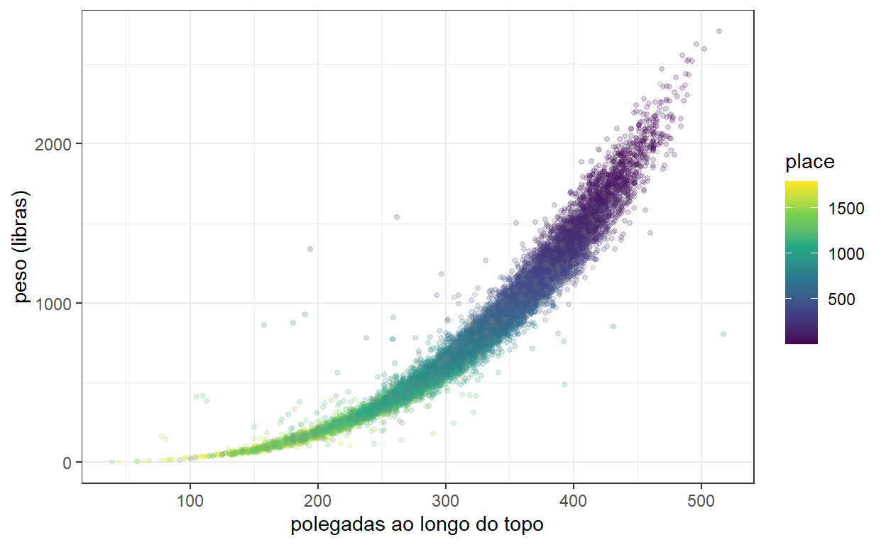
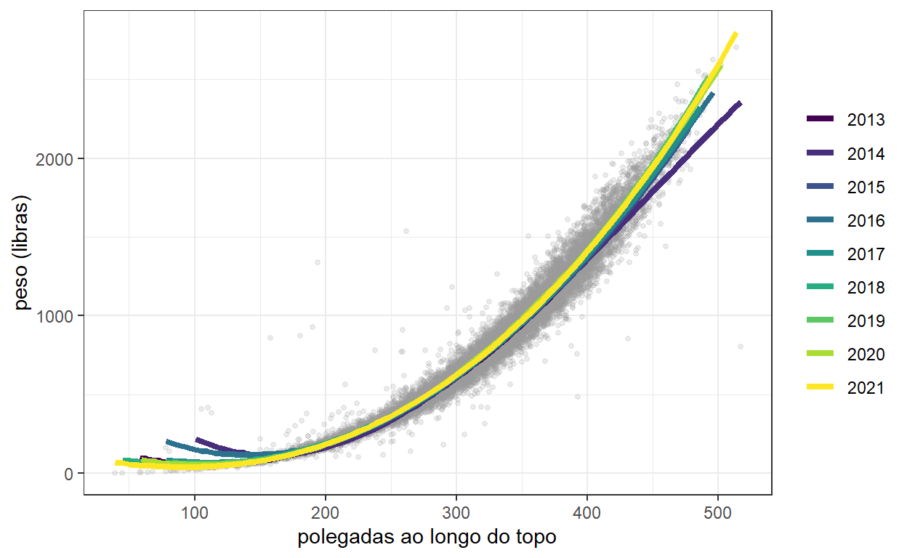
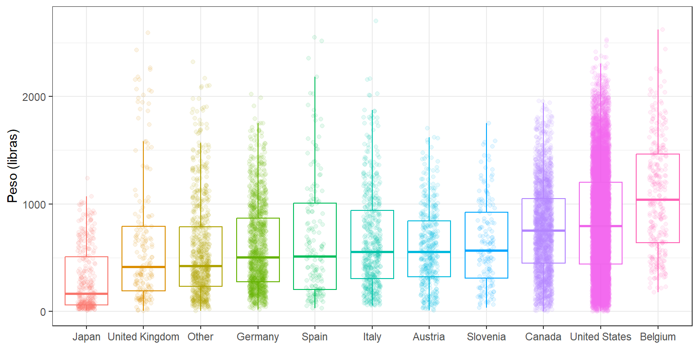
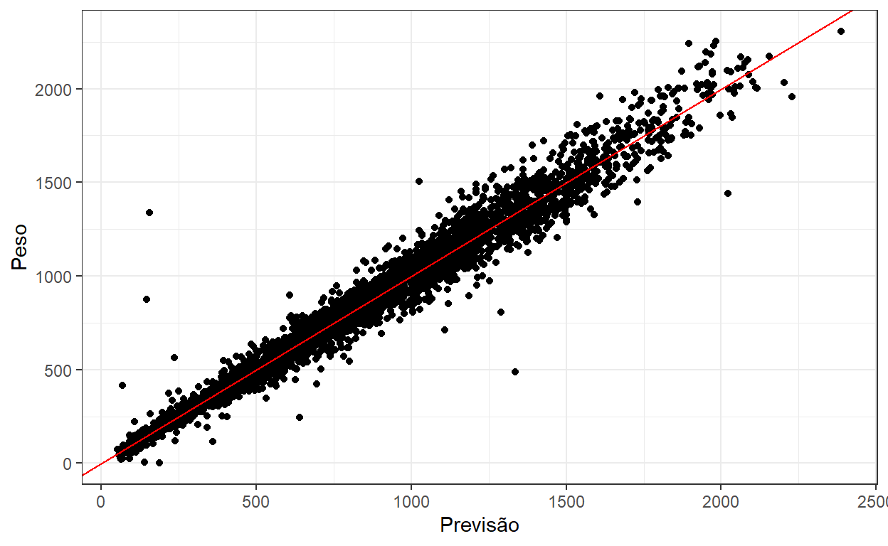
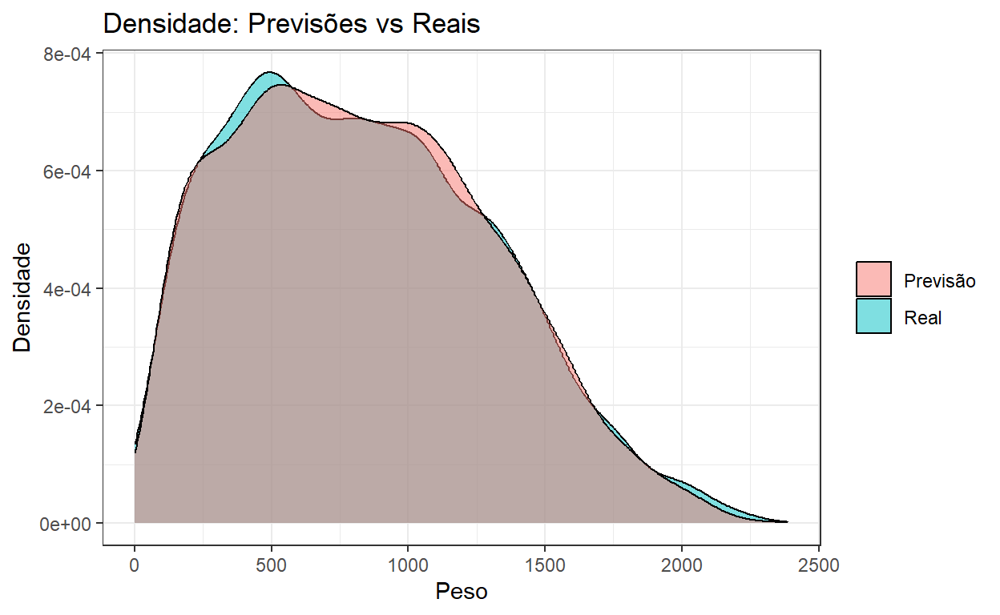

Vamos testar vários modelos para prever pesos de abóboras e determinar quais as variáveis que mais influenciam.
Nosso objetivo de modelagem é prever o peso de abóboras gigantes a partir de outras características medidas durante uma competição.
# Carrega o pacote tidyverse
library(tidyverse)
# Lê os dados
pumpkins_raw <- readr::read_csv("https://raw.githubusercontent.com/rfordatascience/tidytuesday/master/data/2021/2021-10-19/pumpkins.csv")
# Limpa e organiza os dados
pumpkins <-
pumpkins_raw %>%
# Divide a coluna 'id' em 'year' (ano) e 'type' (tipo)
separate(id, into = c("year", "type")) %>%
# Filtra apenas os dados do tipo "P"
filter(type == "P") %>%
# Converte algumas colunas para números
mutate(across(c(year, weight_lbs, ott, place), parse_number)) %>%
# Escolhe colunas importantes
select(weight_lbs, year, place, ott, gpc_site, country)
pumpkins# A tibble: 15,965 × 6
weight_lbs year place ott gpc_site country
<dbl> <dbl> <dbl> <dbl> <chr> <chr>
1 2032 2013 1 475 Uesugi Farms Weigh-off United…
2 1985 2013 2 453 Safeway World Championship Pu… United…
3 1894 2013 3 445 Safeway World Championship Pu… United…
4 1874. 2013 4 436 Elk Grove Giant Pumpkin Festi… United…
5 1813 2013 5 430 The Great Howard Dill Giant P… Canada
6 1791 2013 6 431 Elk Grove Giant Pumpkin Festi… United…
7 1784 2013 7 445 Uesugi Farms Weigh-off United…
8 1784. 2013 8 434 Stillwater Harvestfest United…
9 1780. 2013 9 422 Stillwater Harvestfest United…
10 1766. 2013 10 425 Durham Fair Weigh-Off United…
# ℹ 15,955 more rowsA principal relação aqui é entre o volume/tamanho da abóbora (medido em “polegadas ao longo do topo”) e o peso.
# Filtra os dados para valores de 'ott' entre 20 e 1000
pumpkins %>%
filter(ott > 20, ott < 1e3) %>%
# Cria um gráfico de dispersão com 'ott' no eixo x e 'weight_lbs' no eixo y
ggplot(aes(ott, weight_lbs, color = place)) +
# Adiciona os pontos ao gráfico com transparência e tamanho ajustados
geom_point(alpha = 0.2, size = 1.1) +
# Adiciona rótulos aos eixos
labs(x = "polegadas ao longo do topo", y = "peso (libras)") +
# Aplica uma escala de cores viridis para a variável 'place'
scale_color_viridis_c() +
theme_bw()
Abóboras grandes e pesadas ficam naturalmente mais próximas da vitória nas competições!
Houve alguma mudança nessa relação ao longo do tempo?
# Filtra os dados para valores de 'ott' entre 20 e 1000
pumpkins %>%
filter(ott > 20, ott < 1e3) %>%
# Inicia o gráfico com 'ott' no eixo x e 'weight_lbs' no eixo y
ggplot(aes(ott, weight_lbs)) +
# Adiciona pontos ao gráfico com cor cinza claro, transparência e tamanho ajustados
geom_point(alpha = 0.2, size = 1.1, color = "gray60") +
# Adiciona linhas de suavização separadas por ano usando splines cúbicos
geom_smooth(
aes(color = factor(year)), # Cada ano recebe uma cor diferente
method = lm, # Método de regressão linear
formula = y ~ splines::bs(x, 3), # Usa splines cúbicos na fórmula
se = FALSE, # Não mostra intervalo de confiança
size = 1.5, alpha = 0.6 # Ajusta a espessura e transparência das linhas
) +
# Adiciona rótulos aos eixos e remove o título da legenda de cores
labs(x = "polegadas ao longo do topo", y = "peso (libras)", color = NULL) +
# Usa uma escala de cores discreta do pacote viridis
scale_color_viridis_d() +
theme_bw()
Difícil dizer.
Quais países produziram abóboras mais ou menos massivas?
# Agrupa os 10 países mais frequentes e reorganiza os países com base no peso das abóboras
pumpkins %>%
mutate(
country = fct_lump(country, n = 10), # Agrupa os 10 países mais frequentes
country = fct_reorder(country, weight_lbs) # Ordena os países com base no peso das abóboras
) %>%
# Cria um gráfico de boxplot para cada país com o peso das abóboras
ggplot(aes(country, weight_lbs, color = country)) +
# Adiciona o boxplot, sem mostrar os outliers
geom_boxplot(outlier.colour = NA) +
# Adiciona pontos dispersos (jitter) para visualizar a distribuição dos dados
geom_jitter(alpha = 0.1, width = 0.15, alpha = 0.5) +
# Adiciona rótulos aos eixos
labs(x = NULL, y = "Peso (libras)") +
# Remove a legenda do gráfico
theme_bw() +
theme(legend.position = "none")
# Carrega o pacote tidymodels
library(tidymodels)
# Define a semente para garantir reprodutibilidade
set.seed(123)
# Divide os dados em treinamento e teste, estratificando pela variável 'weight_lbs'
pumpkin_split <- pumpkins %>%
filter(ott > 20, ott < 1e3) %>% # Filtra os dados com 'ott' entre 20 e 1000
initial_split(strata = weight_lbs) # Realiza a divisão estratificada
# Cria o conjunto de treinamento e teste
pumpkin_train <- training(pumpkin_split)
pumpkin_test <- testing(pumpkin_split)
# Define a semente para garantir reprodutibilidade
set.seed(234)
# Cria validação cruzada com 10 dobras no conjunto de treinamento, estratificando pela variável 'weight_lbs'
pumpkin_folds <- vfold_cv(pumpkin_train, strata = weight_lbs)Em seguida, vamos criar três receitas de pré-processamento de dados: uma que apenas agrupa os níveis de fatores pouco utilizados, uma que também cria variáveis indicadoras e, por fim, uma que também cria termos de splines para as polegadas ao longo do topo.
# Cria a receita base, especificando a fórmula e os dados
base_rec <-
recipe(weight_lbs ~ ott + year + country + gpc_site, data = pumpkin_train) %>%
# Agrupa níveis pouco frequentes em 'country' e 'gpc_site' (menos de 2% dos dados)
step_other(country, gpc_site, threshold = 0.02)
# Cria uma receita que adiciona variáveis indicadoras (dummies) aos preditores categóricos
ind_rec <-
base_rec %>%
# Transforma todos os preditores nominais em variáveis dummies
step_dummy(all_nominal_predictors())
# Cria uma receita que adiciona termos de splines cúbicos para a variável 'ott'
spline_rec <-
ind_rec %>%
# Adiciona termos de splines para a variável 'ott'
step_bs(ott)Em seguida, vamos criar quatro especificações de modelo: um modelo de floresta aleatória, um modelo MARS, um modelo linear e um modelo linear bayesiano.
# Especificação do modelo de floresta aleatória
rf_spec <-
rand_forest(trees = 1e3) %>% # Define o número de árvores como 1000
set_mode("regression") %>% # Define o modo do modelo como regressão
set_engine("ranger") # Usa o mecanismo 'ranger' para ajuste
# Especificação do modelo MARS (Multivariate Adaptive Regression Splines)
mars_spec <-
mars() %>% # Inicia a especificação do modelo MARS
set_mode("regression") %>% # Define o modo do modelo como regressão
set_engine("earth") # Usa o mecanismo 'earth' para ajuste
# Especificação do modelo de regressão linear
lm_spec <- linear_reg() # Cria um modelo de regressão linear simples
# Especificação do modelo de regressão linear Bayesiano
bayes_lm_spec <-
linear_reg() %>% # Define o tipo de modelo como regressão linear
set_mode("regression") %>% # Define o modo como regressão
set_engine("stan")Agora é hora de combinar o pré-processamento e os modelos em um workflow_set()
pumpkin_set <-
workflow_set(
list(base_rec, ind_rec, spline_rec, spline_rec),
list(rf_spec, mars_spec, lm=lm_spec, lm_bayes=bayes_lm_spec),
cross = FALSE
)
pumpkin_set# A workflow set/tibble: 4 × 4
wflow_id info option result
<chr> <list> <list> <list>
1 recipe_1_rand_forest <tibble [1 × 4]> <opts[0]> <list [0]>
2 recipe_2_mars <tibble [1 × 4]> <opts[0]> <list [0]>
3 recipe_3_lm <tibble [1 × 4]> <opts[0]> <list [0]>
4 recipe_4_lm_bayes <tibble [1 × 4]> <opts[0]> <list [0]>Usamos cross = FALSE porque não queremos todas as combinações desses componentes, apenas quatro opções para testar. Vamos ajustar esses possíveis candidatos às nossas reamostragens para ver qual deles apresenta o melhor desempenho.
# Registra um backend paralelo para processamento mais rápido
doParallel::registerDoParallel()
# Define a semente para reprodutibilidade
set.seed(2024)
# Ajusta os workflows às reamostragens
pumpkin_rs <-
workflow_map(
pumpkin_set, # Conjunto de workflows criado anteriormente
"fit_resamples", # Método para ajustar o modelo às reamostragens
resamples = pumpkin_folds # Dados de validação cruzada (folds)
)
# Exibe os resultados dos ajustes
pumpkin_rs# A workflow set/tibble: 4 × 4
wflow_id info option result
<chr> <list> <list> <list>
1 recipe_1_rand_forest <tibble [1 × 4]> <opts[1]> <rsmp[+]>
2 recipe_2_mars <tibble [1 × 4]> <opts[1]> <rsmp[+]>
3 recipe_3_lm <tibble [1 × 4]> <opts[1]> <rsmp[+]>
4 recipe_4_lm_bayes <tibble [1 × 4]> <opts[1]> <rsmp[+]>Como se saíram os nossos quatro candidatos?
Não há muita diferença entre as três opções e, se algo se destacou, foram os modelos lineares usando splines. Isso é ótimo, pois é um modelo mais simples!
rank_results(pumpkin_rs)# A tibble: 8 × 9
wflow_id .config .metric mean std_err n preprocessor model
<chr> <chr> <chr> <dbl> <dbl> <int> <chr> <chr>
1 recipe_4_lm… Prepro… rmse 82.4 2.27e+0 10 recipe line…
2 recipe_4_lm… Prepro… rsq 0.970 1.96e-3 10 recipe line…
3 recipe_3_lm Prepro… rmse 82.4 2.27e+0 10 recipe line…
4 recipe_3_lm Prepro… rsq 0.970 1.97e-3 10 recipe line…
5 recipe_2_ma… Prepro… rmse 83.8 1.92e+0 10 recipe mars
6 recipe_2_ma… Prepro… rsq 0.969 1.67e-3 10 recipe mars
7 recipe_1_ra… Prepro… rmse 86.2 1.09e+0 10 recipe rand…
8 recipe_1_ra… Prepro… rsq 0.968 9.85e-4 10 recipe rand…
# ℹ 1 more variable: rank <int>Podemos extrair o workflow que queremos usar e ajustá-lo aos nossos dados de treinamento.
Podemos usar um objeto como este para fazer previsões, como nos dados de teste, por exemplo, predict(final_fit, pumpkin_test), ou podemos examinar os parâmetros do modelo.
# Extrai o modelo ajustado do workflow final
mod <- final_fit %>%
extract_fit_engine()
# Obtém os coeficientes do modelo, organiza e exibe os mais importantes
coef(mod) %>%
tidy() %>% # Organiza os coeficientes de forma limpa
arrange(desc(abs(x))) # Ordena os coeficientes pelo valor absoluto (maior importância)# A tibble: 15 × 2
names x
<chr> <dbl>
1 (Intercept) -9715.
2 ott_bs_3 2584.
3 ott_bs_2 450.
4 ott_bs_1 -346.
5 gpc_site_Ohio.Valley.Giant.Pumpkin.Growers.Weigh.off 20.8
6 country_United.States 12.0
7 gpc_site_Stillwater.Harvestfest 11.6
8 country_Germany -11.4
9 country_other -10.6
10 country_Canada 9.47
11 country_Italy 8.27
12 gpc_site_Elk.Grove.Giant.Pumpkin.Festival -8.06
13 year 4.89
14 gpc_site_Wiegemeisterschaft.Berlin.Brandenburg 1.46
15 gpc_site_other 1.23Os termos de spline são, de longe, os mais importantes, mas também vemos evidências de que certos sites e países são preditivos do peso (para cima ou para baixo), assim como uma pequena tendência de abóboras mais pesadas com o passar dos anos.
# Coleta métricas do ajuste final para avaliação do modelo
final_fit %>%
collect_metrics()# A tibble: 2 × 4
.metric .estimator .estimate .config
<chr> <chr> <dbl> <chr>
1 rmse standard 83.8 Preprocessor1_Model1
2 rsq standard 0.969 Preprocessor1_Model1# Coleta previsões e cria um gráfico de dispersão comparando previsões com valores reais
final_fit %>%
collect_predictions() %>% # Coleta previsões do modelo
ggplot(aes(x = .pred, y = weight_lbs)) + # Define o eixo x como previsões e y como valores reais
geom_point() + # Adiciona pontos representando as observações
geom_abline(col = "red") + # Adiciona uma linha vermelha (y = x) para referência
theme_bw() + # Aplica um tema limpo ao gráfico
labs(x = "Previsão", y = "Peso") # Define os rótulos dos eixos
# Coleta previsões e cria um gráfico de densidade para comparar previsões e valores reais
final_fit %>%
collect_predictions() %>% # Coleta previsões do modelo
ggplot() +
geom_density(aes(x = weight_lbs, fill = "Real"), alpha = 0.5) + # Densidade para valores reais
geom_density(aes(x = .pred, fill = "Previsão"), alpha = 0.5) + # Densidade para previsões
theme_bw() + # Aplica um tema limpo ao gráfico
labs(
x = "Peso", # Rótulo do eixo x
y = "Densidade", # Rótulo do eixo y
title = "Densidade: Previsões vs Reais", # Título do gráfico
fill = NULL # Remove título da legenda
)